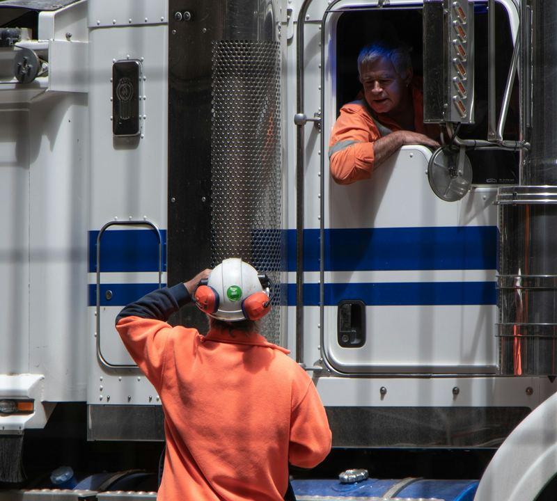
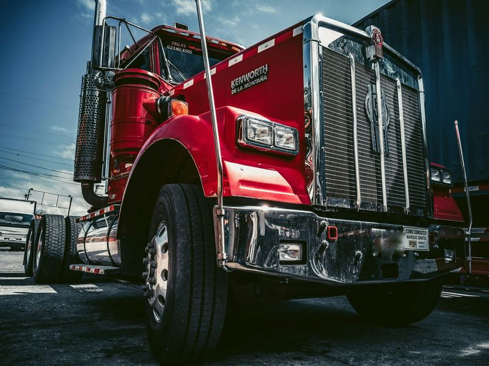
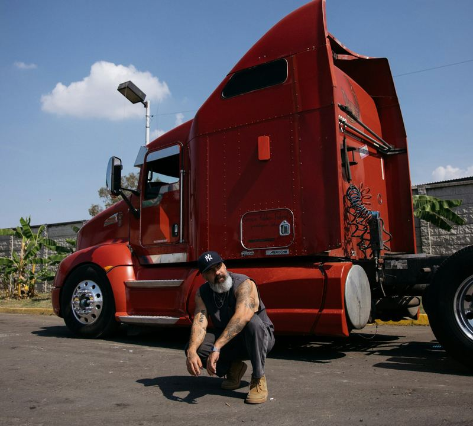
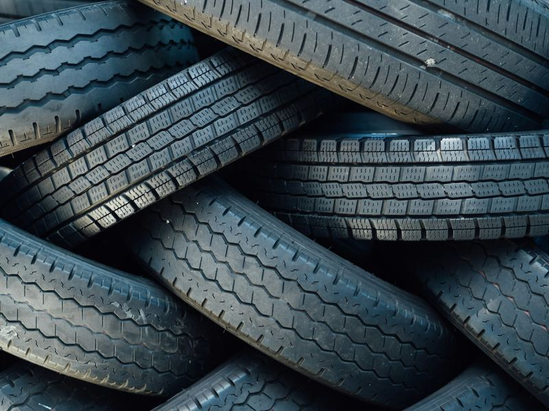

Servis a opravy
Pravidelná údržba, brzdy, podvozek a opravy nákladních automobilů.

Martin Plášek, Velká Štáhle u Rýmařova. Opravy, servis a údržba nákladních automobilů, diagnostika, pneuservis, pneumatiky a náhradní díly.
Po–pá 7–15
Napište rozměr z boku pneumatiky. Ukážeme, co čísla znamenají, a rozměr nám rovnou pošlete s poptávkou.
Auto má vydělávat, ne stát v dílně. Servis, opravy a pneumatiky na jednom místě.

Pravidelná údržba, brzdy, podvozek a opravy nákladních automobilů.

Najdeme závadu dřív, než vůz zastaví na cestě.

Prodej a montáž pneumatik, náhradní díly.